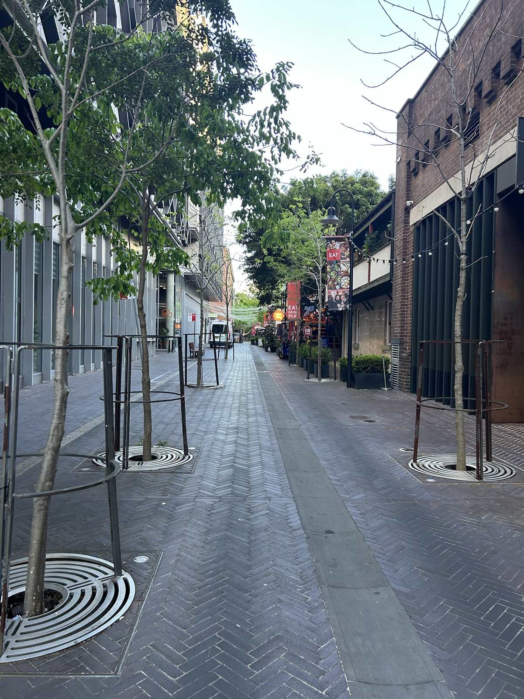
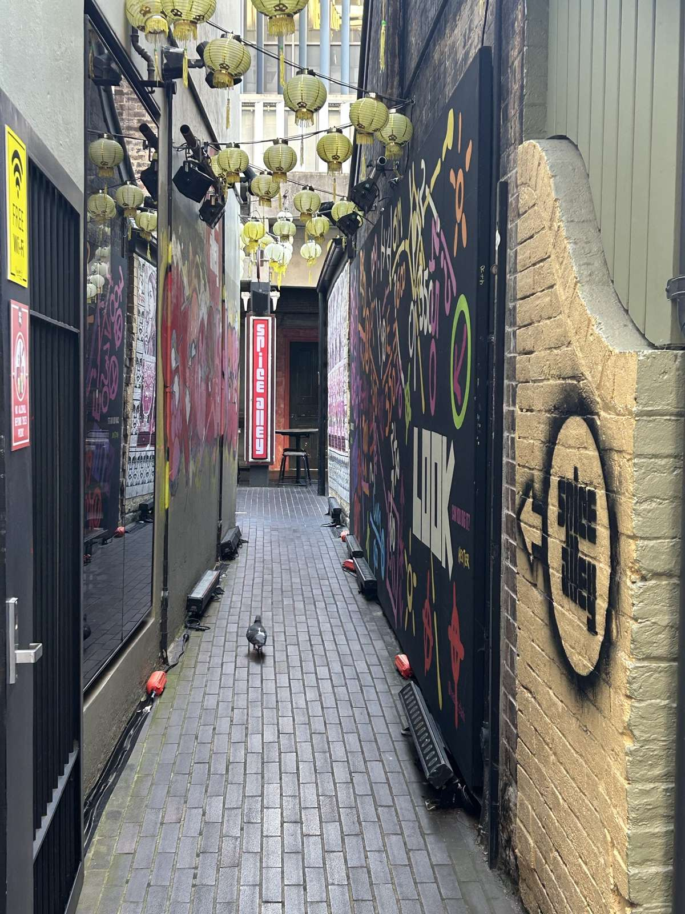
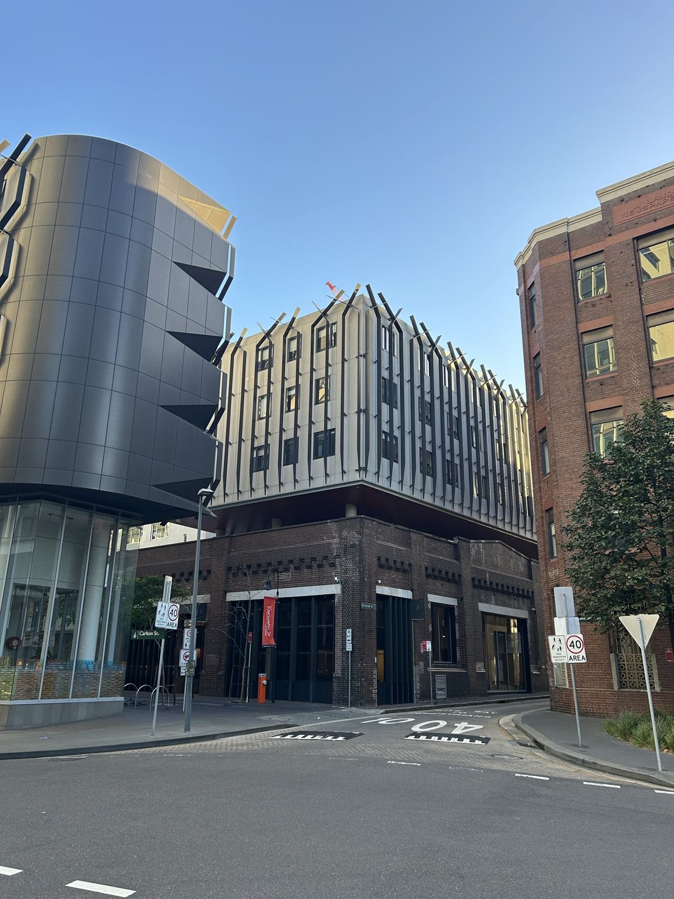
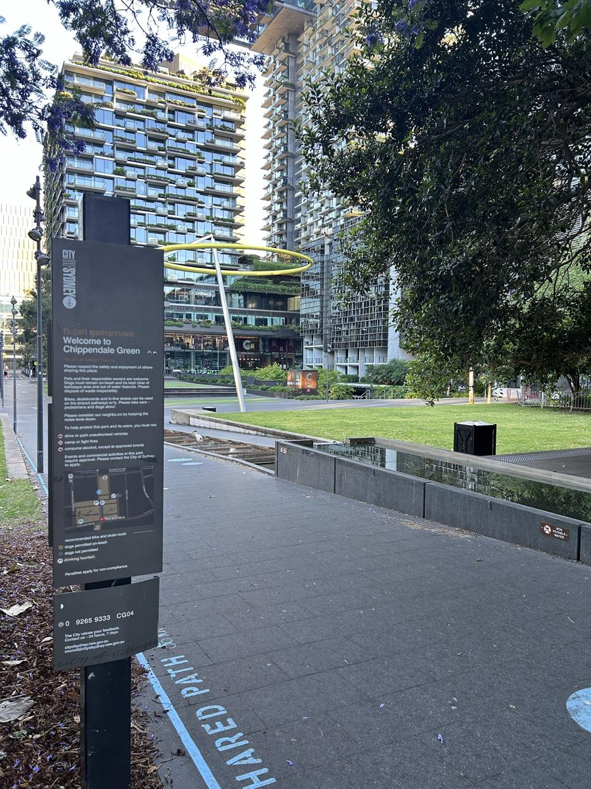
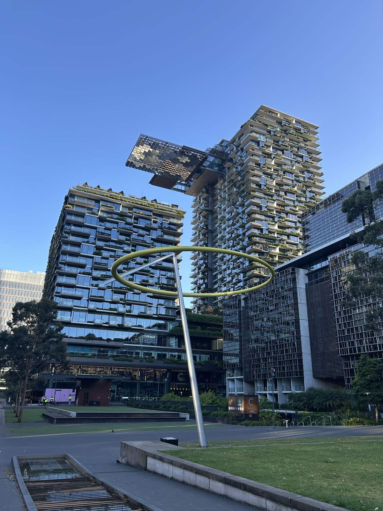
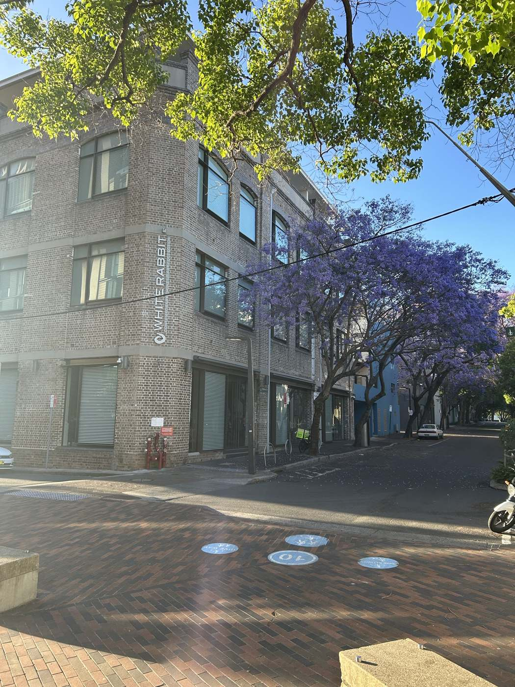

The streets of Chippendale: a local's weekend walk in Sydney
A local's walk through Chippendale, Sydney: Spice Alley on Kensington Street, hidden Chippendale Green, White Rabbit Gallery and The Chippo.
This is my walk through the streets of Chippendale: the corners, laneways and places I think are worth seeing.
I’m starting just off Broadway, on Kensington Street.

Kensington Street and Spice Alley
Kensington Street is where you’ll find Spice Alley, along with lots of different restaurants. It’s set up like a row of hawker stalls, and it’s trying to look like Singapore at night.
It really is beautiful, with all the lanterns and fairy lights.
There’s quite a lot to choose from. You get a drink from the carts, then pick your food from any of the different outlets.
My tip: eat in the back area, down in Spice Alley itself. Sitting at the outdoor tables can be really lovely, especially on a warm evening.

There are some great restaurants around it too. There’s a gin bar, there’s Japanese, and there are plenty of other restaurants. I’ll review those individually as I eat at them.

Find it: Spice Alley
- Address: 18–20 Kensington St, Chippendale NSW 2008, just off Broadway
- Hours: roughly 11am until 9:30–10pm daily. Hours vary by stall, so check their website before you go.
- Website: spicealley.com.au
Chippendale Green
Next stop is Chippendale Green, on Gadigal Country.

It’s a park at the back of Central Park, just off Broadway, and it’s hidden. Lots of people going down Broadway don’t even know it’s there.
But round the back there’s a beautiful park, with the buildings overlooking it. They’re mostly student accommodation, but they’re beautiful, with lots of greenery growing all over them. The cinemas are here too.

You’ll see lots of locals here, and lots of students sitting on the grass at lunchtime and on weekends.
The laneways: galleries and pubs
Chippendale Green is surrounded by the laneways of Chippendale, and they’re full of art galleries.
The well-known one is the White Rabbit Gallery. If you’re here, it’s worth going to.

There are lots of pubs too. The Chippo is a vegan pub, one of the only vegan pubs in Sydney. It’s definitely worth a visit. The food’s amazing.
Find it: White Rabbit Gallery
- Address: 30 Balfour St, Chippendale NSW 2008
- Hours: Wed–Sun 10am–5pm, free entry. The gallery closes between exhibitions, usually in May and November, so check their website before you go.
- Website: whiterabbitcollection.org
Find it: The Chippo
- Address: 87–91 Abercrombie St, Chippendale NSW 2008
- Hours: check their website before you go
- Website: thechippohotel.com.au
Keep exploring
Chippendale is worth exploring. There are lots of little cafes, coffee shops, hidden bars and pubs, and I’m reviewing them individually.
My verdict: definitely a place to come and explore on any given weekend.